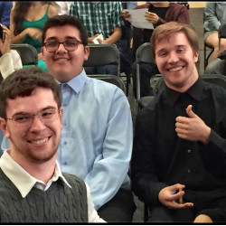

Casey Kwinn
My name is Casey Kwinn. Currently I’m a full-time student at the University of California, Riverside, studying as a freshman. My major is in economics/administrative studies, but I’m strongly considering changing it to Computer Science with a Business Association due to my increasing interest in tech. Outside of school, I also spend much of my time studying programming through online course websites like Udemy, Coursera, Udacity, and even YouTube, as well as some of the online courses offered by Universities like UC Berkeley and MIT. When not studying, I often spend my time listening to music, reading audiobooks and watching videos on self-improvement, or talking with friends.
Outside of self-study, my primary exposure to a professional work environment had been through the Gymnastics academy I went to for over 12 years, Demarays. After training as a gymnast for around 9 years, I was offered a job by the owner of the business to work as an assistant coach, and then eventually as an independent coach. There were many responsibilities I had while working, from running the children classes to coaching the competitive team to performing regular gym maintenance and cleaning during breaks. I would also give frequent talks with parents of the children from the children classes, giving feedback on their performance and behavior, as well as places to improve on and things to practice outside of class.
There have also been several volunteer programs that I have been a part of. The first of which was as a teaching assistant for the Glenmoor Elementary Summer School Program. I spent my time aiding the teacher in project and test grading, as well as children supervision in and out of class. I also would regularly bring attendance sheets and grade reports to the office building. The other main volunteer program I was a part of was for the church my family and I attended: Mission Peak Unitarian Universalist Congregation (MPUUC). Here, I would assist with food preparation for local homeless shelters, event set-up and take-down, and catering at weddings.
Experience
Gymnastics Coach
• Backup coach for boys’ gymnastics team, both developmental and competitive
• Taught hour-long gymnastics classes to children ages 2-13
• Performed regular gym maintenance during breaks
Caterer
• Assist with food preparation for local homeless shelters
• Provide catering services during weddings
• Assist with event set-up and take-down
Teaching Assistant
• Provided administrative assistance as needed
• Assited with test and project grading
• Offered supervision to students in and outside of class
Education
UC Riverside
John F Kennedy High School
Portfolio
